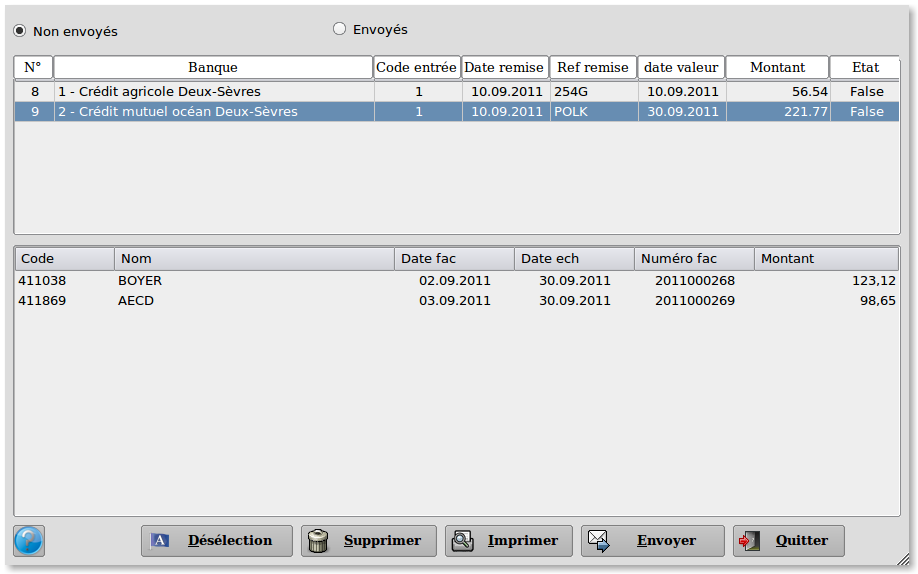
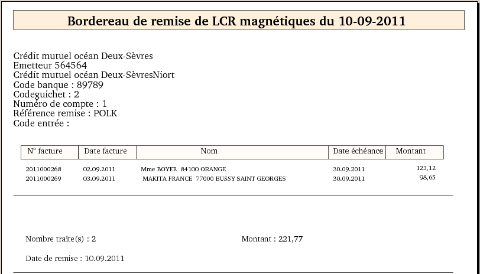
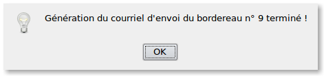
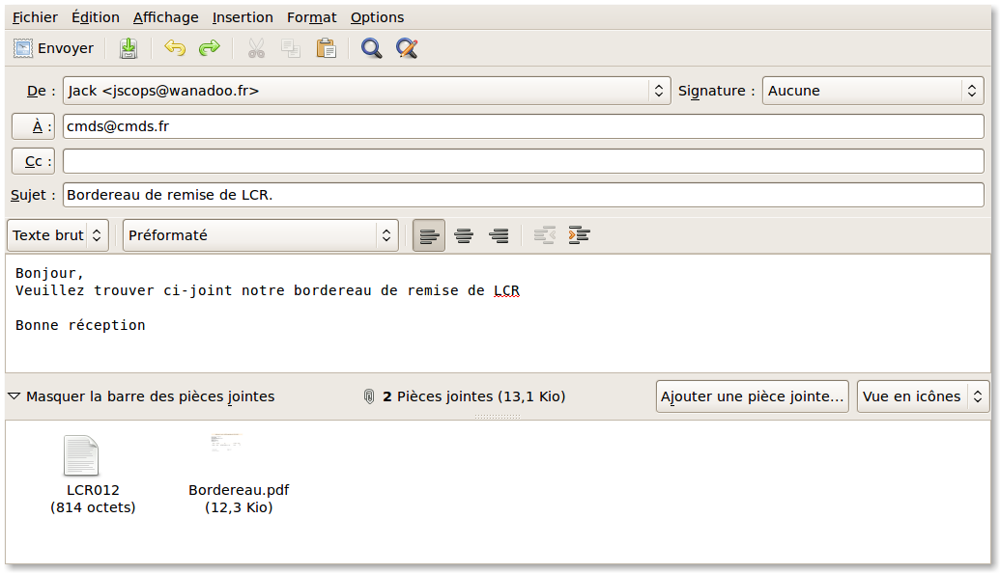

~ Laurux.LCR ~

~ Laurux.LCR ~ |
|
|
|
Gestion des bordereaux.

Il est possible ici d'afficher les bordereaux non envoyés ou envoyés.
L'écran se divise en deux
parties. Dans la partie haute on a les bordereaux et dans la partie
basse on a les LCR pour le bordereau séléctionné.
Il est possible, en cliquant sur le bouton "Désélection",
de désélectionner les LCR d'un bordereau, c'est à dire de les remettre
avec les LCR non traitées. Le bordereau dans ce cas sera annulé.
On peut imprimer le bordereau de remise des LCR en cliquant sur le bouton "Imprimer".

Pour envoyer le bordereau on va cliquer sur le bouton "Envoyer".

Un petit message va prévenir que la génération du bordereau s'est bien passée, puis la fenêtre du gestionnaire de courriels va s'ouvrir.

L'ensemble des zones est automatiquement rempli par les données issues de la banque.
Le fichier des LCR (fichier texte)
ainsi que le bordereau en format PDF sont mis en pièces jointes.
Une fois envoyé, les bordereaux seront visibles en cliquant sur le bouton "Envoyés" dans la partie supérieure de l'écran.
Ces bordereaux ne sont pas supprimés
automatiquement. Pour supprimer un bordereau il faut le sélectionner et
cliquer sur le bouton "Supprimer".
NB : En cas de problème lors de l'envoi
des bordereaux ou de mauvais traitement par la banque, il est possible
de proceder à un nouvel envoi en sélectionnant le bordereau had hoc et
en cliquant sur le bouton "Envoyer". On peut donc envoyer un bordereau à la banque autant de fois qu'on le souhaite.
----------------------------------------------------------------------------------------------------------------------